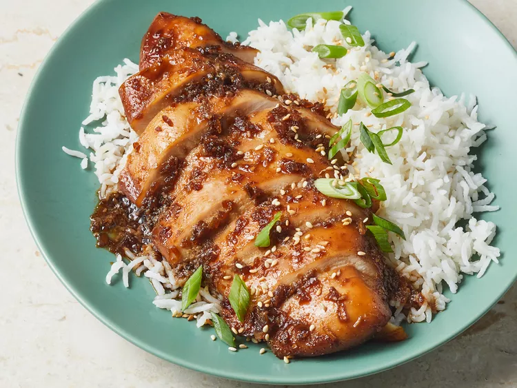

Bourbon Chicken

Description
Bourbon chicken is a popular dish named after Bourbon Street in New Orleans and
for the bourbon whiskey ingredient. If you double the recipe, make sure the
chicken is still in a single layer. Laissez les bons temps rouler!
Ingredients
- 4 skinless, boneless chicken breast halves
- 1/2 cup packed brown sugar
- 1/2 cup soy sauce
- 3/8 cup bourbon
- 2 tablespoons dried minced onion
- 1 teaspon ground ginger
- 1/2 teaspon garlic powder
Steps
- Gather all ingredients
- Place chicken breasts in a single layer in a 9x13-inch baking dish.
- Mix together brown sugar, soy sauce, bourbon, dried minced onion, ginger,
and garlic powder in a small bowl until well combined; pour over chicken.
Cover the dish and marinate in the refrigerator for 8 hours to overnight.
- Preheat the oven to 325 degrees F (165 degrees C).
- Bake uncovered in the preheated oven, basting frequently, until chicken is well browned and juices run clear, about 1 1/2 hours. An instant-read thermometer inserted into the center should read at least 165 degrees F (74 degrees C).